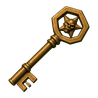

New encounters
Every fight and treasure room Legacy of the Horadrim adds, in the order you meet them.


All encounters
In the campaign

Treasure vaults
After Baal

Sealed arenas
Pinnacles
In the campaign

Gilded Fallen
Normal · Nightmare · Hell
- Where
- Anywhere in the campaign, the Sanctuary Stone maps and the Descent, any difficulty, alone and rare. Not in Pandemonium or Uber Tristram.
- Do
- Catch the rare gold Fallen before it teleports away.
Vaults
Horadric Vault
 Horadric Vault Sigil · Required level 1
Horadric Vault Sigil · Required level 1Cube alone in Harrogath · Hell. Leave by Town Portal.
Stone bosses, tiers IV–XII · Hell · 3.333%
5 chests · The Gilded WretchEach chest
- 1unique or rare item
- 2perfect gems
- 1reagent
- 2gold piles
The Gilded Wretch · One unique or set item.
Gilded Vault

Gilded Key · Required level 1Cube alone in Harrogath · Hell. Leave by Town Portal.
Sentinel champions · Hell · 16.64%
4 rooms · 25 Gilded FallenEach Fallen drops
- 1Gold
- 2Act 5 Hell weapons and armor (A)
- 1Rings, amulets, jewels, charms, gems, and runes
- 1runes
- 1crafting reagent pool